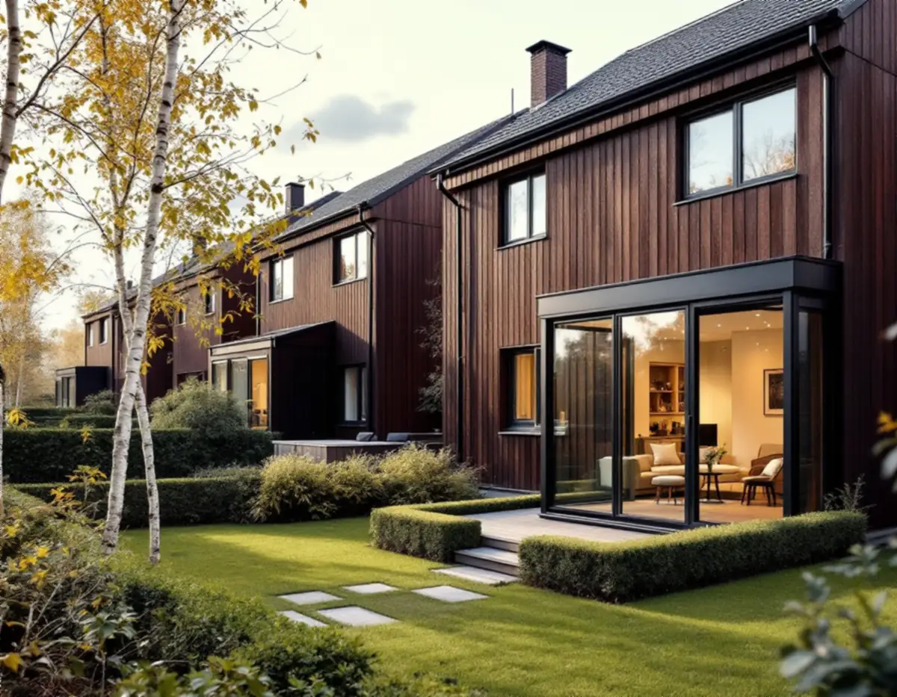
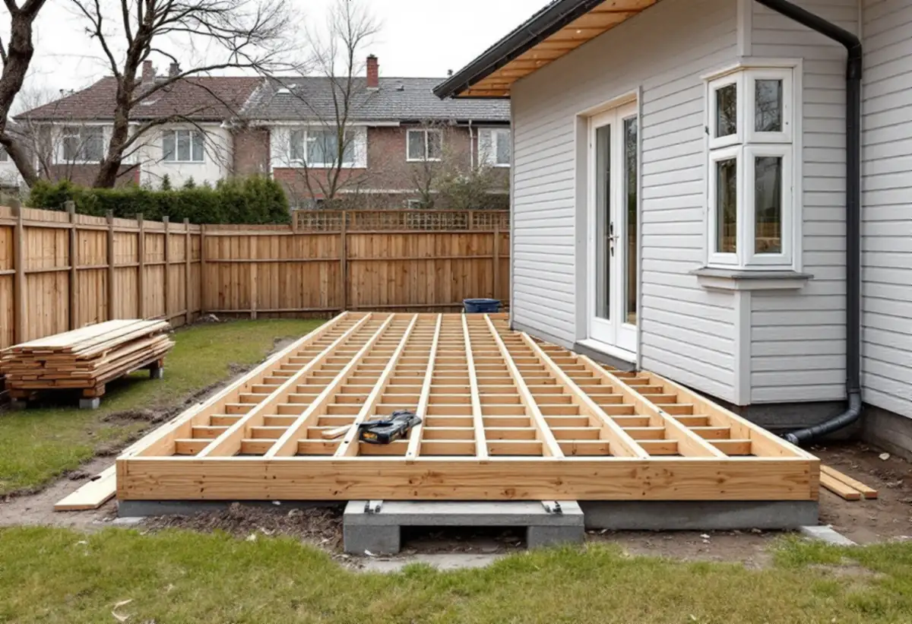

Platsbesök
Vi tittar på husets baksida, avstånden till grannarna och marken.
Stadens vägledning beskriver inglasade uterum som en vanlig tillbyggnad i småhusområden som grannstadsdelarna Akalla och Husby. När huset är en bostadsrätt räcker det inte att reglerna i plan- och bygglagen är uppfyllda – föreningen ska också säga ja. Geal Entreprenad AB bygger tillbyggnader och altaner som total entreprenad, och här är ordningen i Kista.

Stadens områdesfakta för 2025 räknar 971 bostäder i småhus i Kista. Av dem är 482 äganderätter och 404 bostadsrätter, och resten hyresrätter. I grannstadsdelen Akalla är 493 av 671 småhus bostadsrätter och 170 äganderätter. För en stor del av husen är det alltså en förening som är fastighetsägare, och det påverkar hur ett byggprojekt startar.
Akalla och Husby räknas i stadens vägledning Varsam utveckling av småhus- och villaområden till de storskaliga stadsdelarna. Där beskrivs de gruppbyggda småhusen som uppförda på små tomter, vilket gör förutsättningarna för större förändringar av de enskilda husen begränsade. Mindre tillbyggnader är vanliga, till exempel inglasade uterum.
Vägledningen råder fastighetsägare i sådana områden att placera skärmtak, uterum och bodar in mot tomten, på trädgårdssidan, och att undvika förändringar mot gatan. Om ditt hus ligger i en sådan miljö visar Stadsmuseets klassificeringskarta, som staden hänvisar till som en första indikation.

Bostadsrättslagen beskriver en bostadsrättsförening som en förening som upplåter lägenheter med bostadsrätt i föreningens hus, och upplåtelsen kan också omfatta mark intill huset. Huset och tomten du bor på är alltså föreningens, även när du har egen ingång och egen trädgård.
Enligt 7 kap. 7 § bostadsrättslagen får du inte utan styrelsens tillstånd göra ingrepp i bärande konstruktion, installera eller ändra ledningar för avlopp, värme, gas eller vatten, ändra ventilationen eller göra annan väsentlig förändring av lägenheten. Styrelsen får säga nej bara om åtgärden är till påtaglig skada eller olägenhet för föreningen, och den som är missnöjd kan begära att hyresnämnden prövar frågan.
Stockholms stad skriver på samma sätt att du i en bostadsrätt behöver tillstånd från föreningen för anmälningspliktiga ändringar, och uppmanar dig att kontakta styrelsen i god tid. Vi tar därför fram en skiss och en beskrivning av uterummet som styrelsen kan ta ställning till, innan några ritningar beställs.
Sedan 1 december 2025 får en tillbyggnad på ett en- eller tvåbostadshus vara upp till 30,0 kvadratmeter utan bygglov, så länge den inte är högre än husets taknock. Tidigare lovfria tillbyggnader på huset räknas in i ytan. För en- och tvåbostadshus får en sådan tillbyggnad strida mot detaljplanen, till exempel placeras på prickmark.
Tillbyggnaden ska stå 4,5 meter från gränsen mot granne, samfällighet och allmän plats. I en husgrupp är grannen ofta närmare än så, och då krävs ett skriftligt medgivande från alla berörda grannar. Medgivandet ska innehålla fastighetsbeteckning, vilken åtgärd det gäller, en situationsplan med avståndet till gränsen och grannarnas underskrifter. Får du inget medgivande behöver du söka bygglov.
Påverkar uterummet husets bärande konstruktion eller brandskydd krävs en anmälan och ett startbesked, och det gäller även om vatten och avlopp eller en eldstad ska in. Är huset eller området särskilt kulturhistoriskt värdefullt krävs bygglov även för det som annars hade varit lovfritt.
En altan kräver bygglov om den är högre än 1,8 meter och ligger inom 3,6 meter från huset, eller högre än 1,2 meter längre bort. Lovfria altaner får avvika från detaljplanen så länge den totala ytan inte överstiger 50,0 kvadratmeter. Bygger du tak över altanen eller väggar runt den, även under altanen, kan det i stället bli en tillbyggnad.
Ett uterum räknas enligt staden som en tillbyggnad, liksom ett skärmtak. För uterummet behövs plan-, fasad- och sektionsritningar som stämmer med varandra och en material- och kulörbeskrivning med NCS-koder, och det är det underlaget vi tar fram. Mer om husgruppens tak finns hos takläggare i Kista, och om utbyggnader i allmänhet på sidan om tillbyggnad.
Vi tittar på husets baksida, avstånden till grannarna och marken.
En skiss och en beskrivning som föreningen kan besluta om.
Area, höjd, gränsavstånd och klassificering avgör vägen.
Skriftligt, med situationsplan, när avståndet är under 4,5 meter.
Grund, stomme, glas och tak redovisas var för sig.
En kontakt under bygget och dokumentation till föreningen.
Rotavdraget är 30 procent av arbetskostnaden, högst 50 000 kronor per person och år och högst 75 000 kronor tillsammans med rutavdrag. Material och resor ger inget avdrag, och du ska äga bostaden när arbetet utförs.
Skatteverket ger rotavdrag för att bygga om och bygga till en bostadsrätt, men inte för att bygga en altan eller ett förråd, garage eller carport till den. Äger du ditt småhus ger en altan avdrag om den byggs ihop med huset, och en tillbyggnad om den sitter ihop med ytterväggen till minst 75 procent eller har en dörr emellan. Vi drar av rotavdraget direkt på fakturan.
Uterummets storlek, grundläggningen, glaspartierna och hur taket ansluter till huset väger tyngst. Efter ett gratis platsbesök får du ett skriftligt kostnadsförslag.
Total entreprenad för villan.
Byggfirma →Takbyte, takbesiktning och plåtarbeten.
Takläggare i Kista →Låga tak, tätskikt och takbrunnar från 1970-talet.
Takrenovering i Kista →Gårdshus vid radhus och villor.
Attefallshus i Kista →Radhusen, föreningen och ventilationen.
Badrumsrenovering i Kista →Radhus, atriumhus och husgruppen.
Fasadmålning i Kista →Panel, skivor och isolering på radhus.
Fasadrenovering i Kista →Radhus och villor från 1970-talet.
Fönsterbyte i Kista →1970-talets radhusfönster.
Fönsterrenovering i Kista →Nya golv på betong i radhus och lägenheter.
Golvläggare i Kista →Golvslipning i bostadsrätt, hyresrätt och radhus.
Golvslipning i Kista →Småhus i förening och kök från 1970-talet.
Köksrenovering i Kista →1970-talets hus, asbest och ROT.
Målare i Kista →Rännor, stuprör och beslag.
Plåtslagare i Kista →Garderober, väggar och dörrar i lägenheten.
Snickare i Kista →Platta tak och pulpettak.
Takbyte i Kista →Lägenheter och radhus från 1970-talet.
Tapetsering i Kista →Tillbyggnad vid radhus och villor.
Tillbyggnad i Kista →Renovera hela huset eller lägenheten.
Totalrenovering i Kista →